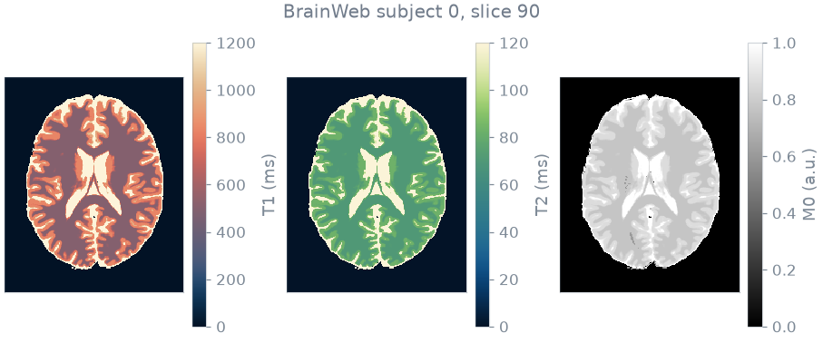
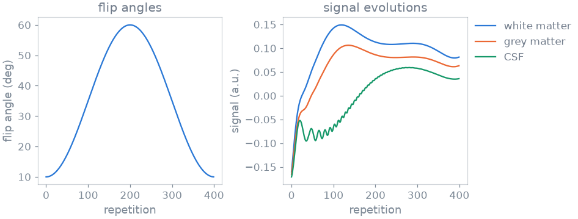
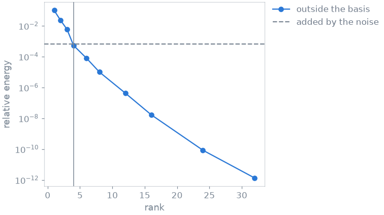
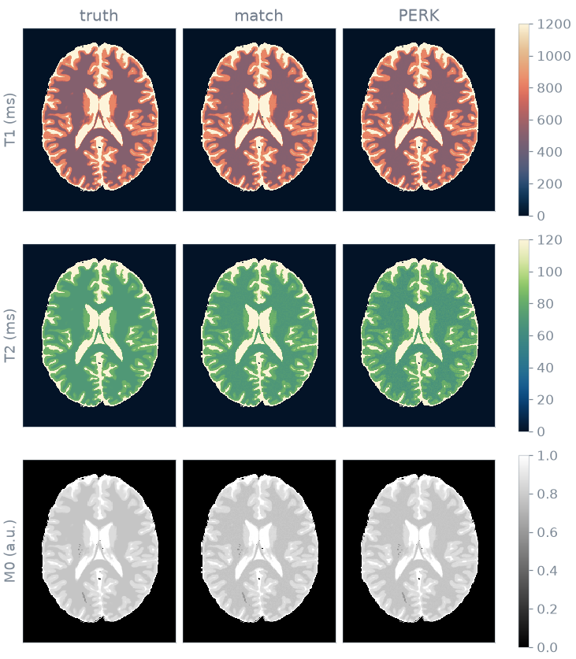
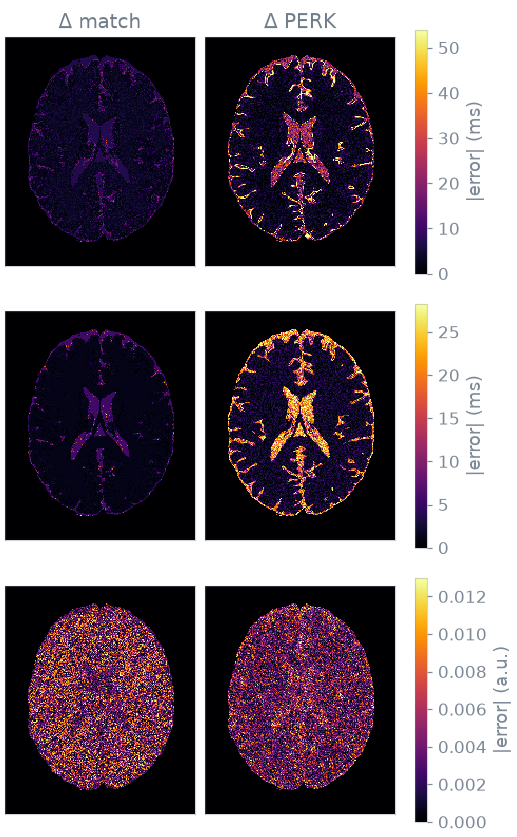
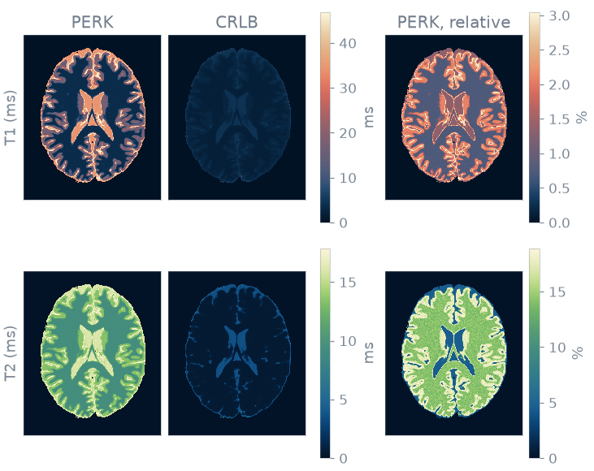

Note
Go to the end to download the full example code or to run this example in your browser via Binder.
PERK: kernel ridge regression#
You map T1, T2 and proton density in a brain slice with PERK, vary the size of the regression, and read the uncertainty it reports against the Cramér-Rao bound.
PERK builds no dictionary. It is a kernel regression trained on signals drawn from a prior instead of laid on a grid. At inference it projects a signal onto a fixed set of random Fourier features and reads the estimate off a linear combination of them. The cost per voxel does not depend on the number of unknown parameters, and the training is paid once.
Prerequisites: Course lesson 1. Your first simulation.
import numpy as np
import torch
from blochsim import Subspace
from blochsim.optim import crlb
from blochsim.estimators import PERK, DictionaryMatcher
from blochsim.simulators import MRFSimulator
Phantom#
The phantom is BrainWeb subject 0, slice 90: an axial 1 mm slice through the lateral ventricles. BrainWeb provides fuzzy tissue memberships, so each voxel holds a fraction of each tissue and its relaxation times are the fraction-weighted average. About a third of the voxels are mixtures, so the ground truth is a continuum of values rather than four.

Sequence#
The sequence is an inversion followed by 400 repetitions at TR = 10 ms. The flip angle varies smoothly along the train, so that the signal evolutions of different tissues differ by physics and not by the noise of an irregular schedule.
The readouts advance the configuration states and do not rewind them, so no transverse magnetization is returned to the imaginary axis and the signal evolution is real to float32 precision. The regression then needs only the real part. These are the evolutions of white matter, grey matter and CSF:
fingerprints = simulator.simulate(
T1=torch.tensor([500.0, 833.0, 2569.0]), T2=torch.tensor([70.0, 83.0, 329.0])
)
print(f"largest imaginary part: {fingerprints.imag.abs().max():.1e}")
fingerprints = fingerprints.real

largest imaginary part: 0.0e+00
Measurement#
The measurement is the evolution of every voxel at its true T1 and T2, scaled by its proton density, with Gaussian noise of 2% of the peak signal. The estimators are given the same noise level: one trained for more noise than the scan has trusts the data less and returns values closer to the prior.
NOISE_STD = float(0.02 * fingerprints.max())
truth = {
"T1": torch.as_tensor(T1_true[mask].copy()),
"T2": torch.as_tensor(T2_true[mask].copy()),
}
density = torch.as_tensor(M0_true[mask].copy())
clean = simulator.simulate(**truth).real * density[:, None]
generator = torch.Generator().manual_seed(42)
measured = clean + NOISE_STD * torch.randn(clean.shape, generator=generator)
Problem statement#
The unknowns are T1 and T2. Both span more than a decade, so the prior is logarithmic: uniform sampling would spend most of the training draws on long T1, where the evolutions are nearly parallel.
Subspace basis#
The 400 contrasts span far fewer than 400 independent directions.
Subspace.fit computes a basis from simulated evolutions and reports the
fraction of their energy that a given rank retains; one minus that fraction
is the relative squared error of projecting onto the basis and back.

At rank 4 the energy left outside the basis is below the energy the noise adds, so rank 4 is used from here on.
Training#
fit draws 20 000 (T1, T2) pairs from the prior, simulates them, adds the
noise level of the scan, and solves the regularized linear system against
1000 random Fourier features. The fitted regression maps a measurement to
the estimates directly:
FEATURES = 1000
perk = PERK(simulator, n_features=FEATURES, regularization=1e-6, normalize=True).fit(
T1=log_uniform(*T1_RANGE, SAMPLES),
T2=log_uniform(*T2_RANGE, SAMPLES),
noise_std=NOISE_STD,
seed=0,
rank=RANK,
samples=SAMPLES,
)
maps = perk(measured) # {"T1": ..., "T2": ...}, one value per voxel
dictionary: 20000 atoms at rank 4; regression: 1000 features from 20000 training draws
Cost and accuracy#
The table compares PERK at three sizes with a dictionary match at rank 4 as the reference. Times are the best of three passes after a warm-up. model is the memory the fitted estimator holds between volumes. peak is the maximum GPU memory allocated while mapping the slice, blank on a machine without a GPU. Errors are medians over the brain voxels, relative to the truth.
method train map model peak T1 T2
------------------------------------------------------------------------------
match, rank 4 1.2s 1.61s 1.4 MiB -- 0.6% 1.6%
PERK, 500 features 1.4s 0.03s 0.0 MiB -- 1.5% 13.0%
PERK, 1000 features 1.9s 0.05s 0.1 MiB -- 0.6% 3.3%
PERK, 4000 features 10.8s 0.12s 0.4 MiB -- 1.1% 5.6%
Maps#
The maps of both methods, and below them the absolute error on a scale of its own for each parameter.


Uncertainty#
With uncertainty=True the regression returns a second set of maps, the
expected distance of the estimate from the truth. PERK learns it during
training from the residuals of its own fit, so reporting it costs a matrix
multiplication and not a second pass over the volume:
The reference is the Cramér-Rao bound: the lowest standard deviation an unbiased estimator could reach from this train at this noise level. The bound is a property of the sequence, so the gap between it and the spread is what the method loses. The bound comes from the Jacobian of the signal with respect to T1 and T2, scaled by the proton density:

PERK CRLB PERK (median over the brain)
T1 11.0 ms 2.4 ms 1.3%
T2 11.4 ms 0.5 ms 14.4%
The two absolute columns share a scale in each row; the third column is the PERK spread as a percentage of the relaxation time, which shows whether a spread of ten milliseconds is small.
Both quantities are largest in CSF, whose long T1 this train resolves least. The gap between the spread and the bound is a separate matter: the T1 spread is a few times the bound, the T2 spread is more than an order of magnitude above it, and the T2 error changed most when the number of features was varied. The T1 gap points to the sequence, the T2 gap to the size of the regression.
The spread is not the noise alone. A regression trained on a prior returns the prior where the data are weak, and is wrong in the same way in every realization, so repeating the scan would not reveal that part.
Specification#
What this page did, stated the way you would ask an agent for it:
With blochsim, map T1, T2 and M0 in BrainWeb subject 0, slice 90, from an
inversion-prepared MRF train of 400 repetitions at 2% noise. Fit a PERK
regression (20 000 log-uniform training draws, subspace rank 4, 500, 1000
and 4000 random Fourier features) and compare it with a rank-4
DictionaryMatcher on the cost table and the maps. Return the PERK
uncertainty and compare it with the Cramér-Rao bound computed from the
simulator Jacobian.
Total running time of the script: (0 minutes 32.373 seconds)